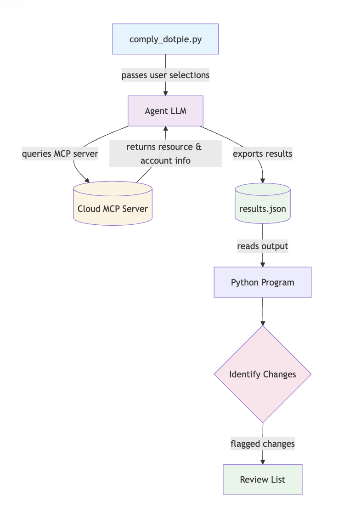

comply_dotpie.py
Python program passes user selections to agent LLM - LLM queries cloud's MCP server to extract resource and account information - Agent exports results to .json file - Python program identifies changes to review.

Roughly 60% of a SOC2 audit is logical control (technical) evidence with the other 40% being governance (management) oversight. You will find a similar split across ISO27001 and PCI-DSS controls. This means it is impossible to automate 100% of evidence. That said, you will find that much of the control evidence is based on showing that certain controls are turned on, certain access is limited, and proof that they were reviewed in pre-determined increments.
We already know that you can ask a model the same question twice and get two different responses. Think of the variation in natural language prompting that would occur on any given day for the same work.
This applies to all agent workflows as well. The more you can fine tune and simplify the output requirement, skill.md file (instructions to accomplish the task), and the general reasoning required… the more you can rely on cheaper models to do heavy lifting. It's simply reckless to invoke Mythos if your workflow is (take python input, extract cloud resources to a json file, and print report). That’s lighting a candle with a flamethrower.